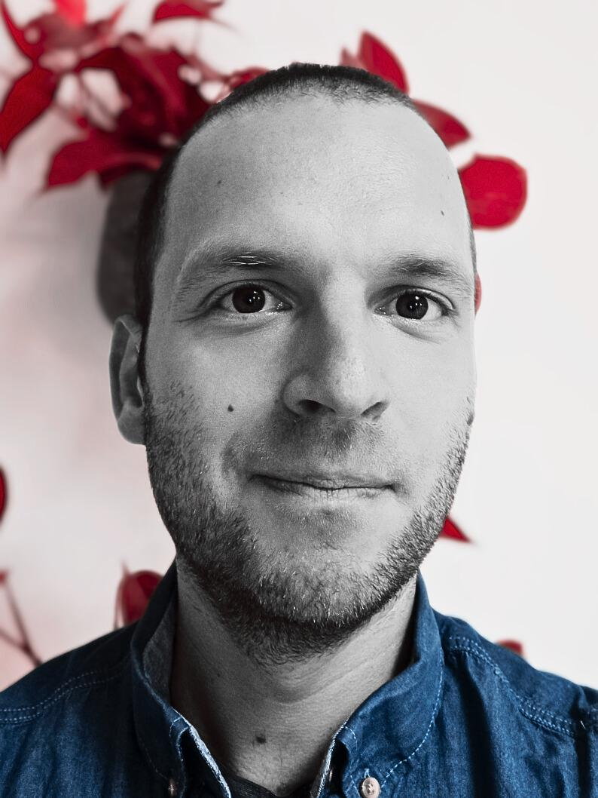

Dario Paapelastname at uni-potsdam.de+49-(0)331-977-2351 Universität Potsdam Department Linguistik Karl-Liebknecht-Straße 24–25 D-14476 Potsdam |  |
About meI'm a postdoctoral researcher in Shravan Vasishth's lab at the University of Potsdam. I'm the PI of the DFG-funded project BUTTON2, in which I investigate garden-path effects using Bayesian computational modeling.I'm visiting the University of Osnabrück from October 2024 to March 2025 as a substitute professor. My interests include, among many others, syntactic parsing and reanalysis, variations of “good enough” processing, and illusions of grammaticality/sense. It's also not the case that I haven't recently become less uninterested in the processing of multiple negation. I'm a big fan of open science, so you can download all of my data, papers and code for free below. If you're interested in bidirectional self-paced reading, which allows regressions, the Ibex script based on Alex Drummond's SPR code can be downloaded here. The ZIP archive also contains data analysis code written in R, including scanpath analyses. |
| • | Dario Paape and Shravan Vasishth. Does conscious rereading lead to targeted regressions in garden-path sentences? Data from a novel stop-and-reread paradigm. 2022. preprint |
| • | Maximilian Rabe, Dario Paape, Shravan Vasishth, and Ralf Engbert. Dynamical cognitive modeling of syntactic processing and eye movement control in reading. 2021. preprint |
| • | Dario Paape, Garrett Smith, and Shravan Vasishth. Do local coherence effects exist in English reduced relative clauses? Accepted pending minor revisions, Journal of Memory and Language, 2024. preprint |
| • | Dario Paape. How do linguistic illusions arise? Rational inference and good-enough processing as competing latent processes within individuals. Language, Cognition and Neuroscience, 2024. link data & code |
| • | Maximilian Rabe, Dario Paape, Daniela Mertzen, Shravan Vasishth, and Ralf Engbert. SEAM: An integrated activation-coupled model of sentence processing and eye movements in reading. Journal of Memory and Language, 135, 104496. 2023. link data & code |
| • | Daniela Mertzen, Dario Paape, Brian Dillon, Ralf Engbert, and Shravan Vasishth. Syntactic and semantic interference in sentence comprehension: Support from English and German eye-tracking data. Glossa Psycholinguistics, 2(1). 2023. link data & code |
| • | Paula Lissón, Dario Paape, Dorothea Pregla, Nicole Stadie, Frank Burchert, and Shravan Vasishth. Similarity-based interference in sentence comprehension in aphasia: A computational evaluation of two models of cue-based retrieval. Computational Brain & Behavior, 6, 473–502. 2023. link data & code |
| • | Dario Paape. The role of incremental and superficial processing in the depth charge illusion: Experimental and modeling evidence. Journal of Semantics, 40(1), 93–125. 2023. link data & code |
| • | Dario Paape and Shravan Vasishth. Conscious rereading is confirmatory: Evidence from bidirectional self-paced reading. Glossa Psycholinguistics, 1(1). 2022. link data & code |
| • | Dario Paape and Shravan Vasishth. Estimating the true cost of garden-pathing: A computational model of latent cognitive processes. Cognitive Science, 46(8):e13186. 2022. link data & code |
| • | Dario Paape and Shravan Vasishth. Is reanalysis selective when regressions are consciously controlled? Glossa Psycholinguistics, 1(1). 2022. link data & code |
| • | Himanshu Yadav, Dario Paape, Garrett Smith, Brian Dillon, and Shravan Vasishth. Individual differences in cue-weighting in sentence comprehension: An evaluation using Approximate Bayesian Computation. Open Mind, 6:1–24. 2022. link data & code |
| • | Dario Paape, Serine Avetisyan, Sol Lago, and Shravan Vasishth. Modeling misretrieval and feature substitution in agreement attraction: A computational evaluation. Cognitive Science, 45(8):e13019. 2021. link data & code |
| • | Dario Paape, Shravan Vasishth, and Ralf Engbert. Does local coherence lead to targeted regressions and illusions of grammaticality? Open Mind, 5:42–58. 2021. link data & code |
| • | Paula Lissón, Dorothea Pregla, Bruno Nicenboim, Dario Paape, Mick L. van het Nederend, Frank Burchert, Nicole Stadie, David Caplan, and Shravan Vasishth. A computational evaluation of two models of retrieval processes in sentence processing in aphasia. Cognitive Science, 45(4):e12956. 2021. link data & code |
| • | Dario Paape, Shravan Vasishth, and Titus von der Malsburg. Quadruplex negatio invertit? The on-line processing of depth charge sentences. Journal of Semantics, 37(4):509–555. 2020. link data & code |
| • | Dario Paape, Barbara Hemforth, and Shravan Vasishth. Processing of ellipsis with garden-path antecedents in French and German: Evidence from eye tracking. PLOS ONE, 13(6). 2018. link data & code |
| • | Dario Paape, Bruno Nicenboim, and Shravan Vasishth. Does antecedent complexity affect ellipsis processing? An empirical investigation. Glossa, 2(1). 2017. link data & code appendices |
| • | Dario Paape. Filling the silence: Reactivation, not reconstruction. Frontiers in Psychology, 27(7). 2016. link data & code |
| • | Dario Paape and Shravan Vasishth. Local coherence and preemptive digging-in effects in German. Language and Speech, 59(3):387–403. 2016. draft data & code |
| • | Dario Paape. When Transformer models are more compositional than humans: The case of the depth charge illusion. Proceedings of Experiments in Linguistic Meaning (ELM) 2. 2023. link |
| • | Dario Paape. Five degrees of (non)sense: Investigating the connection between bullshit receptivity and susceptibility to semantic illusions. Proceedings of Experiments in Linguistic Meaning (ELM) 2. 2023. link |
| • | Paula Lissón, Dorothea Pregla, Dario Paape, Frank Burchert, Nicole Stadie, and Shravan Vasishth. Modeling sentence comprehension deficits in aphasia: A computational evaluation of the direct-access model of retrieval. Proceedings of the Workshop on Cognitive Modeling and Computational Linguistics, pages 177–185. 2021. link data & code |
| • | Dario Paape and Malte Zimmermann. Conditionals on crutches: Expanding the modal horizon. Proceedings of Sinn und Bedeutung 24. 2020. link data & code |
| • | Dario Paape. Reanalyzed antecedents in German sluicing. Proceedings of TL/MAPLL, August 12–13, 2014, Tokyo, Japan. |
| • | Dario Paape. Using multinomial processing trees to model latent cognitive processes during garden-pathing. MathPsych/ICCM, July 20–22, 2024, Tilburg, Netherlands. slides |
| • | Dario Paape. Good-enough processing versus rational inference in linguistic illusions: Modeling judgments of formal correctness and meaning recoverability with a race model. 36th Annual Conference on Human Sentence Processing (HSP), March 9–11, 2023. slides |
| • | Dario Paape, Garrett Smith, and Shravan Vasishth. Is there any evidence for local coherence effects? 36th Annual Conference on Human Sentence Processing (HSP), March 9–11, 2023. (short talk) |
| • | Dario Paape and Shravan Vasishth. Are linguistic illusions driven by good-enough processing or conscious rational inference? Architectures and Mechanisms for Language Processing (AMLaP), September 7–9, 2022. (short talk) |
| • | Dario Paape, Garrett Smith, and Shravan Vasishth. Is there any evidence for local coherence effects? Architectures and Mechanisms for Language Processing (AMLaP), September 7–9, 2022. (short talk) |
| • | Dario Paape and Shravan Vasishth. An MPT model of garden-pathing and reanalysis with dissociable process costs. 35th Annual Conference on Human Sentence Processing (HSP), March 24–26, 2022. (short talk) slides |
| • | Dario Paape and Shravan Vasishth. A large-scale evaluation of bidirectional self-paced reading. Architectures and Mechanisms for Language Processing (AMLaP), September 2–4, 2021. (short talk) abstract |
| • | Dario Paape and Shravan Vasishth. Is reanalysis selective when regressions are manually controlled? 34th Annual CUNY Conference on Human Sentence Processing, March 4–6, 2021. (short talk) abstract |
| • | Daniela Mertzen, Brian W. Dillon, Dario Paape, Ralf Engbert, and Shravan Vasishth. An investigation of the time-course of syntactic and semantic interference in online sentence comprehension. 34th Annual CUNY Conference on Human Sentence Processing, March 4–6, 2021. (short talk) abstract |
| • | Paula Lissón, Dorothea Pregla, Dario Paape, Bruno Nicenboim, Nicole Stadie, Frank Burchert, and Shravan Vasishth. Computational models of retrieval processes in sentence comprehension in aphasia. Architectures and Mechanisms for Language Processing (AMLaP), September 3–5, 2020, Potsdam, Germany. abstract |
| • | Dario Paape. Reanalyzed antecedents in German sluicing. TL/MAPLL, August 12–13, 2014, Tokyo, Japan. |
| • | Dario Paape, Shravan Vasishth, and Titus von der Malsburg. Local coherence and digging-in effects in German. 26th Annual CUNY Conference on Human Sentence Processing, March 21–23, 2013, Columbia, SC. |
| • | Dario Paape. When Transformer models are more compositional than humans: The case of the depth charge illusion. Experiments in Linguistic Meaning (ELM), May 18–20, 2022. abstract | ||
| • | Dario Paape. Five degrees of (non)sense: Investigating the connection between bullshit receptivity and susceptibility to semantic illusions. Experiments in Linguistic Meaning (ELM), May 18–20, 2022. abstract | ||
| • | Dario Paape. Influences of word order and meaning reversal on the depth charge illusion. Workshop on Linguistic Illusions in Sentence Processing, September 13–14, 2021, Konstanz, Germany. abstract | ||
| • | Dario Paape. Too strong to eliminate or negate is surely no illusion. Architectures and Mechanisms for Language Processing (AMLaP), September 3–5, 2020, Potsdam, Germany. pdf | ||
| • | Himanshu Yadav, Garrett Smith, Dario Paape, and Shravan Vasishth. Modeling individual differences in sentence comprehension. Architectures and Mechanisms for Language Processing (AMLaP), September 3–5, 2020, Potsdam, Germany. poster | ||
| • | Dario Paape and Malte Zimmermann. Conditionals on crutches: Expanding the modal horizon. Sinn und Bedeutung 24, September 4–6, 2019, Osnabrück, Germany. poster | ||
| • | Dario Paape and Shravan Vasishth. The problem of illusory power for imaginary interactions. Architectures and Mechanisms for Language Processing (AMLaP), September 6–8, 2019, Moscow, Russia. poster | ||
| • | Dario Paape, Serine Avetisyan, Sol Lago, and Shravan Vasishth. Modeling misretrieval and feature substitution in agreement attraction. Architectures and Mechanisms for Language Processing (AMLaP), September 6–8, 2019, Moscow, Russia. poster | ||
| • | Dario Paape, Shravan Vasishth, and Ralf Engbert. Can local coherence effects lead to illusions of grammaticality? Architectures and Mechanisms for Language Processing (AMLaP), September 6–8, 2019, Moscow, Russia. poster | ||
| • | Paula Lissón, Mick van het Nederend, Dorothea Pregla, Bruno Nicenboim, Shravan Vasishth, and Dario Paape. Competing models of retrieval in sentence processing: The case of aphasia. Architectures and Mechanisms for Language Processing (AMLaP), September 6–8, 2019, Moscow, Russia. poster | ||
| • |
Paula Lissón, Bruno Nicenboim, Shravan Vasishth, and Dario Paape. Models of retrieval in sentence comprehension in aphasia. StanCon 2019, Cambridge, UK. poster
| • | Dario Paape and Shravan Vasishth. Meaning reversal in multiply negated sentences − New evidence from two tasks. Workshop on Psycholinguistic and Computational Perspectives on Non-Compositional Meaning in Phrases, November 29–30, 2018, Tübingen, Germany. poster | |
| • | Dario Paape and Shravan Vasishth. A verbal illusion without the verb: Derailed compositional interpretation in sentence completions. Architectures and Mechanisms for Language Processing (AMLaP), September 6–8, 2018, Berlin, Germany. poster | ||
| • | Dario Paape and Shravan Vasishth. On-line processing of "depth charge" sentences: No evidence for working memory overload. 30th Annual CUNY Conference on Human Sentence Processing, March 29–31, 2017, Cambridge, MA. poster | ||
| • | Dario Paape, Barbara Hemforth, and Shravan Vasishth. Ellipsis with garden-path antecedents in French. 29th Annual CUNY Conference on Human Sentence Processing, March 3–5, 2016, Gainesville, FL. poster (also presented at Architectures and Mechanisms for Language Processing (AMLaP), September 1–3, 2016, Bilbao, Spain.) | ||
| • | Dario Paape, Bruno Nicenboim, and Shravan Vasishth. Antecedent ambiguity and ellipsis: Testing the reactivation account. Architectures and Mechanisms for Language Processing (AMLaP), September 3–5, 2015, Valletta, Malta. poster | ||
| • | Dario Paape. A reactivation advantage for sluicing antecedents in German. 28th Annual CUNY Conference on Human Sentence Processing, March 19–21, 2015, Los Angeles, CA. poster |
| Dr. phil. in Cognitive Science, University of Potsdam | Dissertation topic: "Antecedent complexity effects on ellipsis processing" link Advisors: Shravan Vasishth and Reinhold Kliegl Grade: "summa cum laude" |
| MSc in Linguistics, University of Potsdam | Thesis topic: "Local coherence and digging-in effects in German" Advisors: Shravan Vasishth and Titus von der Malsburg Grade: 1,0 ("with distinction") |
| BSc in Linguistics, University of Potsdam | Thesis topic: "Focus as a conventional implicature and a case study on Romanian" Advisors: Stavros Skopeteas and Malte Zimmermann Grade: 1,2 ("with distinction") |
| • | DFG research grant for project BUTTON2, funded for three years. 2023. 318,250 € |
| • | DFG research grant for project BUTTON, funded for three years. 2019. 338,465 € |
| • | Mobility grant. Laboratoire d'excellence Empirical Foundations of Linguistics — EFL. 2015. 4000 € |
| Winter 2024/25 | Introduction to data analysis and statistics (@ Uni Osnabrück) | |
| Winter 2019/20 | Breaking the rules? "Good-enough" processing and related phenomena Introduction to statistical data analysis | |
| Summer 2019 | Breaking the rules? "Good-enough" processing and related phenomena (@ ESSLLI 2019, Riga) Introduction to statistics Empirical methods in linguistics | |
| Winter 2018/19 | Breaking the rules? "Good-enough" processing and related phenomena Computational models of sentence processing | |
| Summer 2018 | Empirical methods in linguistics | |
| Winter 2017/18 | Computational models of sentence processing | |
| Summer 2017 | Computational models of sentence processing Empirical methods in linguistics | |
| Winter 2016/17 | Language processing in multilinguals | |
| Summer 2016 | Empirical methods in linguistics | |
| Winter 2015/16 | Breaking the rules? "Good-enough" processing and related phenomena | |
| Summer 2015 | Empirical methods in linguistics | |
| Winter 2014/15 | Predictions and retrieval processes in parsing | |
| Summer 2014 | Serial and parallel parsing | |
| Winter 2013/14 | Language processing and working memory: Effects of decay and similarity-based interference |